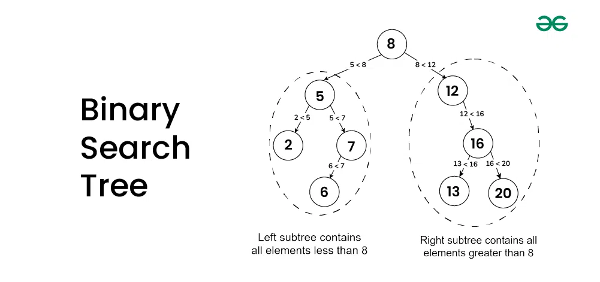

Binary Search tree¶
A Binary Search Tree is a data structure used in computer science for organizing and storing data in a sorted manner.
Each node in a Binary Search Tree has at most two children, a left child and a right child,
with the left child containing values less than the parent node and the right child containing values greater than the parent node.
This hierarchical structure allows for efficient searching, insertion, and deletion operations on the data stored in the tree.
任何节点的建值一定大于其左子树中的每一个节点的键值，并小于其右子树中的每一个节点的键值
Minimum value¶
Find the node with minimum value in a Binary Search Tree